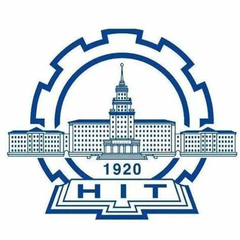
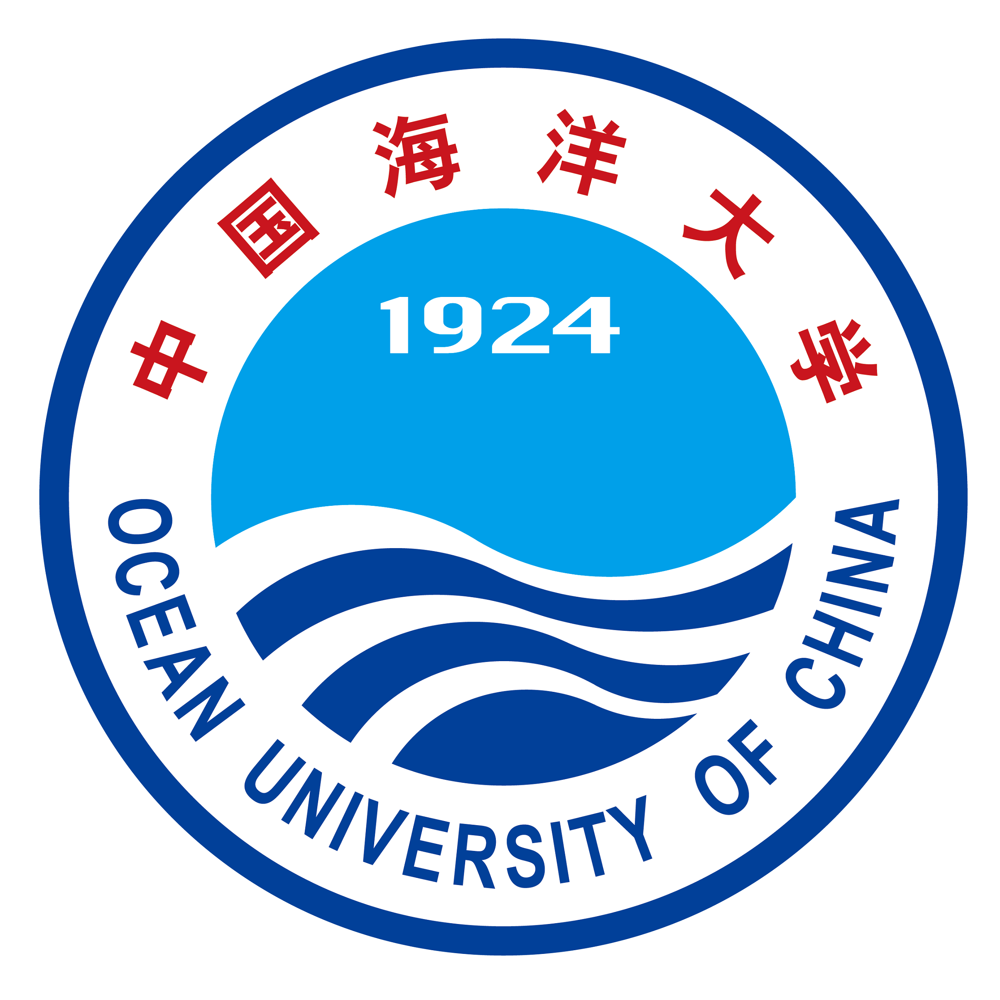

教育背景

哈尔滨工业大学C9双一流
计算机科学与技术
本科
工学学士
2012.09 ~ 2016.07
哈尔滨工业大学C9双一流
金融学
本科第二学位
经济学学士
2013.09 ~ 2016.07

中国海洋大学双一流
工程管理(信息工程管理)
硕士
在读
2024.09 ~ 至 今
工作经验
海信网络科技
高级软件开发工程师 / 开发组长 / 项目经理
2019.10 ~ 至 今
涉及ToG业务领域：公共安全 · 智慧安防 · 智慧交通
- 作为开发工程师，先后承担7个大中型软件产品的核心模块开发工作，所负责的软件产品在9个地市实战落地。
- 2022年至2024年期间担任开发组长，负责后端开发团队的工作分配与绩效考评，带领团队完成了5个项目。
- 2024年作为项目经理，负责公司立项项目的项目管理工作，里程碑完成率100%。
公司优秀员工后备人才连续4年绩效考评A
微众银行
软件开发工程师 / 项目经理
2016.08 ~ 2019.09
涉及ToC业务领域：人行指标计算 · 反欺诈 · 语音机器人
- 作为开发工程师，先后承担人行指标计算系统、反欺诈系统的开发及维护工作。
- 2018年作为项目经理，负责“金融联络机器人”项目。该产品累计服务27家金融机构，触达人次近800万。
全行优秀员工连续2年绩效考评A+
专业技能
资格证书
- 信息系统项目管理师(软考高级)
- PMP项目管理认证
- 中国计算机学会CCF软件能力认证(前10%)